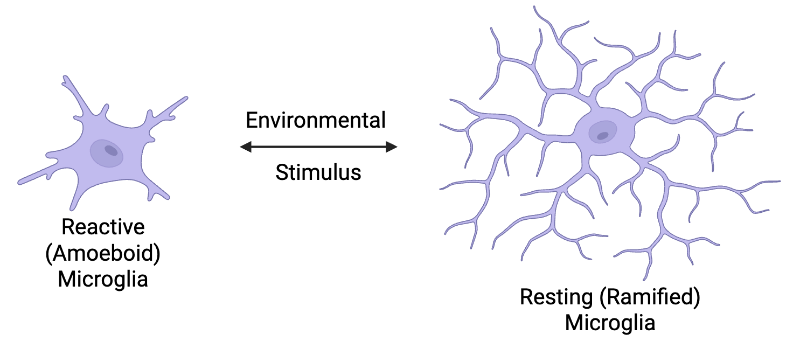
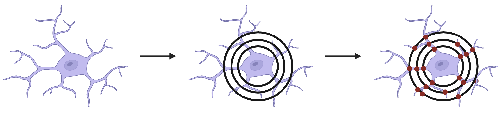
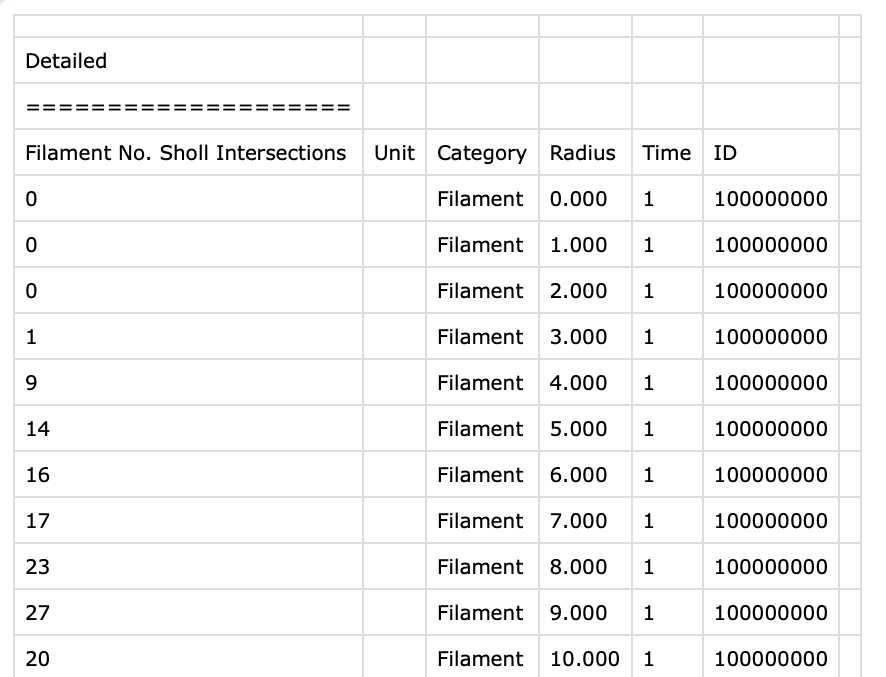

library(tidyverse)
library(cowplot)
library(here)Data Wrangling for Sholl Analysis
Intro to R Final Project
What is Known about Microglia?
Microglia are the resident immune cells of the central nervous system. These cells have several important functions related to immune surveillance and response which work to maintain brain homeostasis and protect from disease.
phagocytosis of dead cells, cellular debris, and protein aggregates
inflammatory response through secretion of pro- or anti-inflammatory cytokines
Additionally, microglia regulate neurogenesis and synaptic plasticity through their phagocytic and secretory actions.
In healthy tissue, microglia exist in a “resting” state. This name is a bit of a misnomer as microglia are never resting. Homeostatic microglia are extremely dynamic cells which are constantly moving their processes in order to monitor the brain microenvironment.
Also contributing to their dynamic nature, is their ability to perform phenotypic switching in response to environmental stimuli. In a healthy brain, a majority of microglia are in a resting morphology which is defined by a ramified appearance. Upon encountering damage- or pathogen-associated molecular patterns, microglia become reactive and retract their processes to adopt an amoeboid morphology.

What is Sholl Analysis?
The characterization of microglia morphology is commonly used as a metric of microglia activation. This characterization is most often accomplished by measuring microglia complexity through Sholl analysis.
Sholl analysis applies concentric circles, each 1 um apart, to 2D or 3D renderings of microglia. The number of intersections that occur between the circles and the microglial processes are than quantified. This quantification is then used to estimate microglial complexity. More ramified, and less activated, microglia will have more intersections at radii farther from the cell soma. Amoeboid, and more activated, microglia will have less intersections.

The Data
This project will be completed using a subset of Sholl analysis data that I have collected during my Ph.D. project.
The Code
First thing is first, we need to load in some packages. For this script, I used tidyverse packages, cowplot for plotting, and a package called here which simplifies file paths.
Load Packages
Data Import
Data import is going to be a bit more complicated than usual. The Imaris software exports Sholl data in individual csv files (see below).
# A tibble: 6 × 7
`Filament No. Sholl Intersections` Unit Category Radius Time ID ...7
<dbl> <lgl> <chr> <dbl> <dbl> <dbl> <lgl>
1 0 NA Filament 0 1 100000000 NA
2 0 NA Filament 1 1 100000000 NA
3 0 NA Filament 2 1 100000000 NA
4 1 NA Filament 3 1 100000000 NA
5 9 NA Filament 4 1 100000000 NA
6 14 NA Filament 5 1 100000000 NA This table is from one output file. Each cell that is analyzed one of these files. I have up to 30 cells per animal resulting in an approximate total of 500 cells meaning I have 500 csv files to compare.
To get around importing each of those files separately, I have written some code loops. A loop is a statement that allows for a block of code to be executed repeatedly. I have written 2 loops for this data analysis which I will explain below.
For now, I have set 2 file paths. The input path leads to a folder that contains the raw output folders from Imaris. The output path leads to the folder that will store the output for the rest of the script.
# set path to input files
input_path <- "data/240521_MG/21-32-07/Imaris"
# set path to output folder
output_path <- "data/Sholl_trim"Imaris saves the output files, named *Detailed.csv, within a statistics folder for each cell analyzed. To speed up the process of importing each separate file, I am using the list.files command. This base R command lists out all of the files located in a specific directory. By setting the path as my input path, I told R to look in the folder that contains subdirectories with the *Detailed.csv files. I then set the pattern to recognize only the *Detailed.csv files. Setting recursive as true allows R to open the subdirectories within the Imaris folder. Setting full.names to true means that the entire relative file path will be listed instead of just the file name.
# open subfolders and find the *Detailed.csv files
input_files <- list.files(
path = input_path,
pattern = "Detailed\\.csv$",
recursive = TRUE,
full.names = TRUE)There is no output from this command as it is saved to input_files.
Data Transformation
Now that all of the input files have been located, we can begin to remove unnecessary columns. Let’s have a look at the data file again.

You’ll notice that the data does not begin until row 5 with column headers in row 4. Additionally, the data necessary for Sholl analysis are located in the “Filament No. Sholl Intersections” and “Radius” columns. The four other columns do not provide helpful data.
Before we combine all of the statistics files together, it would be smart to organize the individual files. I have written a loop that will do exactly that.
First of all, the loop with repeat for each file listed by input_files. It will start with the first file and continue down the list until it completes all 17 files.
The first step of the loop is to read in the csv file. Using skip = 4 means that the first 4 rows of each file will be skipped. This removes the 4 unnecessary rows of headers. Since the headers were removed, col_names is set to false.
In the next step, the data file is updated to only include the two columns containing Sholl data using select, and these columns are given headers using rename. Additionally, mutate is used to add a new column to the data file which includes the file path.
Finally, the data file is given a new name and saved as a csv to the output file. Let’s walk backwards through the code. The file name is extracted from the full file path using basename. The file extension (.csv) is then removed using file_path_sans_ext. The paste0 function allows for “.trim.csv” to be added to the end of the file name. The newly trimmed data file is then saved to the output folder with the new name.
for (file in input_files) {
data <- read_csv(file, skip = 4, col_names = FALSE)
trimmed <- data |>
mutate(filename = file) |>
select(filename, X1, X4) |>
rename(intersections = X1,
radius = X4)
output_file <- file.path(output_path, paste0(tools::file_path_sans_ext(basename(file)), ".trim.csv"))
write_csv(trimmed, output_file)
}Rows: 32 Columns: 7
── Column specification ────────────────────────────────────────────────────────
Delimiter: ","
chr (1): X3
dbl (4): X1, X4, X5, X6
lgl (2): X2, X7
ℹ Use `spec()` to retrieve the full column specification for this data.
ℹ Specify the column types or set `show_col_types = FALSE` to quiet this message.
Rows: 39 Columns: 7
── Column specification ────────────────────────────────────────────────────────
Delimiter: ","
chr (1): X3
dbl (4): X1, X4, X5, X6
lgl (2): X2, X7
ℹ Use `spec()` to retrieve the full column specification for this data.
ℹ Specify the column types or set `show_col_types = FALSE` to quiet this message.
Rows: 39 Columns: 7
── Column specification ────────────────────────────────────────────────────────
Delimiter: ","
chr (1): X3
dbl (4): X1, X4, X5, X6
lgl (2): X2, X7
ℹ Use `spec()` to retrieve the full column specification for this data.
ℹ Specify the column types or set `show_col_types = FALSE` to quiet this message.
Rows: 34 Columns: 7
── Column specification ────────────────────────────────────────────────────────
Delimiter: ","
chr (1): X3
dbl (4): X1, X4, X5, X6
lgl (2): X2, X7
ℹ Use `spec()` to retrieve the full column specification for this data.
ℹ Specify the column types or set `show_col_types = FALSE` to quiet this message.
Rows: 33 Columns: 7
── Column specification ────────────────────────────────────────────────────────
Delimiter: ","
chr (1): X3
dbl (4): X1, X4, X5, X6
lgl (2): X2, X7
ℹ Use `spec()` to retrieve the full column specification for this data.
ℹ Specify the column types or set `show_col_types = FALSE` to quiet this message.
Rows: 43 Columns: 7
── Column specification ────────────────────────────────────────────────────────
Delimiter: ","
chr (1): X3
dbl (4): X1, X4, X5, X6
lgl (2): X2, X7
ℹ Use `spec()` to retrieve the full column specification for this data.
ℹ Specify the column types or set `show_col_types = FALSE` to quiet this message.
Rows: 29 Columns: 7
── Column specification ────────────────────────────────────────────────────────
Delimiter: ","
chr (1): X3
dbl (4): X1, X4, X5, X6
lgl (2): X2, X7
ℹ Use `spec()` to retrieve the full column specification for this data.
ℹ Specify the column types or set `show_col_types = FALSE` to quiet this message.
Rows: 35 Columns: 7
── Column specification ────────────────────────────────────────────────────────
Delimiter: ","
chr (1): X3
dbl (4): X1, X4, X5, X6
lgl (2): X2, X7
ℹ Use `spec()` to retrieve the full column specification for this data.
ℹ Specify the column types or set `show_col_types = FALSE` to quiet this message.
Rows: 55 Columns: 7
── Column specification ────────────────────────────────────────────────────────
Delimiter: ","
chr (1): X3
dbl (4): X1, X4, X5, X6
lgl (2): X2, X7
ℹ Use `spec()` to retrieve the full column specification for this data.
ℹ Specify the column types or set `show_col_types = FALSE` to quiet this message.
Rows: 48 Columns: 7
── Column specification ────────────────────────────────────────────────────────
Delimiter: ","
chr (1): X3
dbl (4): X1, X4, X5, X6
lgl (2): X2, X7
ℹ Use `spec()` to retrieve the full column specification for this data.
ℹ Specify the column types or set `show_col_types = FALSE` to quiet this message.
Rows: 72 Columns: 7
── Column specification ────────────────────────────────────────────────────────
Delimiter: ","
chr (1): X3
dbl (4): X1, X4, X5, X6
lgl (2): X2, X7
ℹ Use `spec()` to retrieve the full column specification for this data.
ℹ Specify the column types or set `show_col_types = FALSE` to quiet this message.
Rows: 53 Columns: 7
── Column specification ────────────────────────────────────────────────────────
Delimiter: ","
chr (1): X3
dbl (4): X1, X4, X5, X6
lgl (2): X2, X7
ℹ Use `spec()` to retrieve the full column specification for this data.
ℹ Specify the column types or set `show_col_types = FALSE` to quiet this message.
Rows: 29 Columns: 7
── Column specification ────────────────────────────────────────────────────────
Delimiter: ","
chr (1): X3
dbl (4): X1, X4, X5, X6
lgl (2): X2, X7
ℹ Use `spec()` to retrieve the full column specification for this data.
ℹ Specify the column types or set `show_col_types = FALSE` to quiet this message.
Rows: 39 Columns: 7
── Column specification ────────────────────────────────────────────────────────
Delimiter: ","
chr (1): X3
dbl (4): X1, X4, X5, X6
lgl (2): X2, X7
ℹ Use `spec()` to retrieve the full column specification for this data.
ℹ Specify the column types or set `show_col_types = FALSE` to quiet this message.
Rows: 43 Columns: 7
── Column specification ────────────────────────────────────────────────────────
Delimiter: ","
chr (1): X3
dbl (4): X1, X4, X5, X6
lgl (2): X2, X7
ℹ Use `spec()` to retrieve the full column specification for this data.
ℹ Specify the column types or set `show_col_types = FALSE` to quiet this message.
Rows: 55 Columns: 7
── Column specification ────────────────────────────────────────────────────────
Delimiter: ","
chr (1): X3
dbl (4): X1, X4, X5, X6
lgl (2): X2, X7
ℹ Use `spec()` to retrieve the full column specification for this data.
ℹ Specify the column types or set `show_col_types = FALSE` to quiet this message.
Rows: 57 Columns: 7
── Column specification ────────────────────────────────────────────────────────
Delimiter: ","
chr (1): X3
dbl (4): X1, X4, X5, X6
lgl (2): X2, X7
ℹ Use `spec()` to retrieve the full column specification for this data.
ℹ Specify the column types or set `show_col_types = FALSE` to quiet this message.Data Combination
Now we have a folder with several different csv files containing Sholl data for each analyzed cell. The next step is to combine these individual data files into one.
First, we once again use list.files to create a list that contains all trimmed data files. The first file is then read into R and removes the rows that contain “filename” which is the header row. This row is removed to prevent repeated header columns in the final data frame. The remaining files are edited and eventually combined with a loop. The first file is excluded from the loop in order to create a data frame that the remaining data can be added to.
The loop starts the same as the previous code for the first file. Then the new data frame is added to the existing data frame containing the first file. The loop repeats until all of the files have been added to the combined data frame.
The column headers are then added and the combined file is written.
all_files <- list.files("data/Sholl_trim", pattern = "\\.csv$", full.names = TRUE)
df <- read.csv(all_files[1], header = FALSE)
df <- df[df$V1 !="filename", ]
for (i in 2:length(all_files)) {
tmp <- read.csv(all_files[i], header = FALSE)
tmp <- tmp[tmp$V1 !="filename", ]
df <- rbind(df, tmp)
print(paste("Processed file", i, "of", length(all_files)))
}[1] "Processed file 2 of 17"
[1] "Processed file 3 of 17"
[1] "Processed file 4 of 17"
[1] "Processed file 5 of 17"
[1] "Processed file 6 of 17"
[1] "Processed file 7 of 17"
[1] "Processed file 8 of 17"
[1] "Processed file 9 of 17"
[1] "Processed file 10 of 17"
[1] "Processed file 11 of 17"
[1] "Processed file 12 of 17"
[1] "Processed file 13 of 17"
[1] "Processed file 14 of 17"
[1] "Processed file 15 of 17"
[1] "Processed file 16 of 17"
[1] "Processed file 17 of 17"colnames(df) <- c("filename", "intersections", "radius")
write.csv(df, "data/Sholl.csv", row.names = FALSE)Taking a peek at the data frame shows that there are three columns. One contains the file path, and therefore the sample ID. The second and third contain the Sholl data.
glimpse(df)Rows: 735
Columns: 3
$ filename <chr> "data/240521_MG/21-32-07/Imaris/21-32-07_100x_CA1_1_Stat…
$ intersections <chr> "0", "0", "0", "1", "9", "14", "16", "17", "23", "27", "…
$ radius <chr> "0", "1", "2", "3", "4", "5", "6", "7", "8", "9", "10", …Text to Column
As mentioned, each sample ID is currently stored in a file path. Obviously, this is not ideal. The file path can be separated into individual columns to isolate important sample information.
To preserve the integrity of the original file path column, the column is duplicated. The text in the duplicated column can be turned into individual columns using separate_wider_delim.
df$filename_copy <- df$filename
data <- separate_wider_delim(df,
cols = filename_copy,
names = c("folder1", "folder2", "id", "folder5", "folder6", "Detailed"),
delim = "/")
glimpse(data)Rows: 735
Columns: 9
$ filename <chr> "data/240521_MG/21-32-07/Imaris/21-32-07_100x_CA1_1_Stat…
$ intersections <chr> "0", "0", "0", "1", "9", "14", "16", "17", "23", "27", "…
$ radius <chr> "0", "1", "2", "3", "4", "5", "6", "7", "8", "9", "10", …
$ folder1 <chr> "data", "data", "data", "data", "data", "data", "data", …
$ folder2 <chr> "240521_MG", "240521_MG", "240521_MG", "240521_MG", "240…
$ id <chr> "21-32-07", "21-32-07", "21-32-07", "21-32-07", "21-32-0…
$ folder5 <chr> "Imaris", "Imaris", "Imaris", "Imaris", "Imaris", "Imari…
$ folder6 <chr> "21-32-07_100x_CA1_1_Statistics", "21-32-07_100x_CA1_1_S…
$ Detailed <chr> "21-32-07_100x_CA1_c1_Detailed.csv", "21-32-07_100x_CA1_…The data frame now contains six new columns. However, four of these columns contain unnecessary information and can be removed from the data frame. Using select, the important columns were isolated in the data frame.
data <- data |>
select(id, filename, intersections, radius, Detailed)
head(data)# A tibble: 6 × 5
id filename intersections radius Detailed
<chr> <chr> <chr> <chr> <chr>
1 21-32-07 data/240521_MG/21-32-07/Imaris/21-32-0… 0 0 21-32-0…
2 21-32-07 data/240521_MG/21-32-07/Imaris/21-32-0… 0 1 21-32-0…
3 21-32-07 data/240521_MG/21-32-07/Imaris/21-32-0… 0 2 21-32-0…
4 21-32-07 data/240521_MG/21-32-07/Imaris/21-32-0… 1 3 21-32-0…
5 21-32-07 data/240521_MG/21-32-07/Imaris/21-32-0… 9 4 21-32-0…
6 21-32-07 data/240521_MG/21-32-07/Imaris/21-32-0… 14 5 21-32-0…Text to Column… Again
The data frame now contains the sample ID, but the newly dubbed Detailed column still contains more crucial information. This information includes the subregion in which the cell was located and cell number. Text to columns can be used again to separate this information.
data <- separate_wider_delim(data,
cols = Detailed,
names = c("x1", "x2", "subregion", "cell", "x3"),
delim = "_")
glimpse(data)Rows: 735
Columns: 9
$ id <chr> "21-32-07", "21-32-07", "21-32-07", "21-32-07", "21-32-0…
$ filename <chr> "data/240521_MG/21-32-07/Imaris/21-32-07_100x_CA1_1_Stat…
$ intersections <chr> "0", "0", "0", "1", "9", "14", "16", "17", "23", "27", "…
$ radius <chr> "0", "1", "2", "3", "4", "5", "6", "7", "8", "9", "10", …
$ x1 <chr> "21-32-07", "21-32-07", "21-32-07", "21-32-07", "21-32-0…
$ x2 <chr> "100x", "100x", "100x", "100x", "100x", "100x", "100x", …
$ subregion <chr> "CA1", "CA1", "CA1", "CA1", "CA1", "CA1", "CA1", "CA1", …
$ cell <chr> "c1", "c1", "c1", "c1", "c1", "c1", "c1", "c1", "c1", "c…
$ x3 <chr> "Detailed.csv", "Detailed.csv", "Detailed.csv", "Detaile…Once again, the necessary columns can be isolated from the unnecessary ones using select. Additionally, more sample information can be added to the data frame. Based on the subregion isolated from the filename, the region can be inferred.
TRUE ~ NA_character_ ensures that any data that does not match either of the presented cases is labeled as NA.
data <- data |> select(id, subregion, cell, filename, intersections, radius) |>
rename(CellID = filename) |>
mutate(section = str_extract(subregion, "\\d"),
region_prefix = str_extract(subregion, "[A-Z]+"),
region = case_when(
region_prefix %in% c("CA", "DG") ~ "HPC",
region_prefix %in% c("DS", "VS") ~ "STR",
TRUE ~ NA_character_))
head(data)# A tibble: 6 × 9
id subregion cell CellID intersections radius section region_prefix region
<chr> <chr> <chr> <chr> <chr> <chr> <chr> <chr> <chr>
1 21-3… CA1 c1 data/… 0 0 1 CA HPC
2 21-3… CA1 c1 data/… 0 1 1 CA HPC
3 21-3… CA1 c1 data/… 0 2 1 CA HPC
4 21-3… CA1 c1 data/… 1 3 1 CA HPC
5 21-3… CA1 c1 data/… 9 4 1 CA HPC
6 21-3… CA1 c1 data/… 14 5 1 CA HPC For the final time, the important data is isolated from the unneeded data columns. Additionally, mutate is used to convert the “radius” and “intersections” columns from character vectors to numeric vectors.
data <- data |> select(id, region, subregion, section, cell, CellID, intersections, radius)
head(data)# A tibble: 6 × 8
id region subregion section cell CellID intersections radius
<chr> <chr> <chr> <chr> <chr> <chr> <chr> <chr>
1 21-32-07 HPC CA1 1 c1 data/240521_MG/2… 0 0
2 21-32-07 HPC CA1 1 c1 data/240521_MG/2… 0 1
3 21-32-07 HPC CA1 1 c1 data/240521_MG/2… 0 2
4 21-32-07 HPC CA1 1 c1 data/240521_MG/2… 1 3
5 21-32-07 HPC CA1 1 c1 data/240521_MG/2… 9 4
6 21-32-07 HPC CA1 1 c1 data/240521_MG/2… 14 5 data <- data |>
mutate(radius = as.numeric(as.character(radius))) |>
mutate(intersections = as.numeric(as.character(intersections)))
glimpse(data)Rows: 735
Columns: 8
$ id <chr> "21-32-07", "21-32-07", "21-32-07", "21-32-07", "21-32-0…
$ region <chr> "HPC", "HPC", "HPC", "HPC", "HPC", "HPC", "HPC", "HPC", …
$ subregion <chr> "CA1", "CA1", "CA1", "CA1", "CA1", "CA1", "CA1", "CA1", …
$ section <chr> "1", "1", "1", "1", "1", "1", "1", "1", "1", "1", "1", "…
$ cell <chr> "c1", "c1", "c1", "c1", "c1", "c1", "c1", "c1", "c1", "c…
$ CellID <chr> "data/240521_MG/21-32-07/Imaris/21-32-07_100x_CA1_1_Stat…
$ intersections <dbl> 0, 0, 0, 1, 9, 14, 16, 17, 23, 27, 20, 19, 19, 15, 16, 3…
$ radius <dbl> 0, 1, 2, 3, 4, 5, 6, 7, 8, 9, 10, 11, 12, 13, 14, 15, 16…write.csv(data, "data/Sholl.csv", row.names = FALSE)Metadata Time!
While the data has been parsed as much as possible, data is still missing from the file. These missing factors include variables such as sex, group, and age which are needed for data comparison. This data is readily accessible in a metadata file that I previously made. This metadata file can be applied to the data frame to match the correct variables to each sample ID.
First, the metadata file is read into R.
meta <- read.csv("data/240521_MG/meta_sholl.csv", header = TRUE, stringsAsFactors = FALSE, colClasses = "character")
head(meta) id litter group trt sex months age
1 21-32-07 21-32 CON none F 25 agedMerge is used to combine the data frame with the metadata file. Merge will automatically match the “id” columns and applies the remaining metadata columns correctly.
data <- merge(data, meta)
glimpse(data)Rows: 735
Columns: 14
$ id <chr> "21-32-07", "21-32-07", "21-32-07", "21-32-07", "21-32-0…
$ region <chr> "HPC", "HPC", "HPC", "HPC", "HPC", "HPC", "HPC", "HPC", …
$ subregion <chr> "CA1", "CA1", "CA1", "CA1", "CA1", "CA1", "CA1", "CA1", …
$ section <chr> "1", "1", "1", "1", "1", "1", "1", "1", "1", "1", "1", "…
$ cell <chr> "c1", "c1", "c1", "c1", "c1", "c1", "c1", "c1", "c1", "c…
$ CellID <chr> "data/240521_MG/21-32-07/Imaris/21-32-07_100x_CA1_1_Stat…
$ intersections <dbl> 0, 0, 0, 1, 9, 14, 16, 17, 23, 27, 20, 19, 19, 15, 16, 3…
$ radius <dbl> 0, 1, 2, 3, 4, 5, 6, 7, 8, 9, 10, 11, 12, 13, 14, 15, 16…
$ litter <chr> "21-32", "21-32", "21-32", "21-32", "21-32", "21-32", "2…
$ group <chr> "CON", "CON", "CON", "CON", "CON", "CON", "CON", "CON", …
$ trt <chr> "none", "none", "none", "none", "none", "none", "none", …
$ sex <chr> "F", "F", "F", "F", "F", "F", "F", "F", "F", "F", "F", "…
$ months <chr> "25", "25", "25", "25", "25", "25", "25", "25", "25", "2…
$ age <chr> "aged", "aged", "aged", "aged", "aged", "aged", "aged", …The dataset is then reorganized using relocate to place all of the metadata columns together.
data <- data |> relocate(9:14, .after=id)
glimpse(data)Rows: 735
Columns: 14
$ id <chr> "21-32-07", "21-32-07", "21-32-07", "21-32-07", "21-32-0…
$ litter <chr> "21-32", "21-32", "21-32", "21-32", "21-32", "21-32", "2…
$ group <chr> "CON", "CON", "CON", "CON", "CON", "CON", "CON", "CON", …
$ trt <chr> "none", "none", "none", "none", "none", "none", "none", …
$ sex <chr> "F", "F", "F", "F", "F", "F", "F", "F", "F", "F", "F", "…
$ months <chr> "25", "25", "25", "25", "25", "25", "25", "25", "25", "2…
$ age <chr> "aged", "aged", "aged", "aged", "aged", "aged", "aged", …
$ region <chr> "HPC", "HPC", "HPC", "HPC", "HPC", "HPC", "HPC", "HPC", …
$ subregion <chr> "CA1", "CA1", "CA1", "CA1", "CA1", "CA1", "CA1", "CA1", …
$ section <chr> "1", "1", "1", "1", "1", "1", "1", "1", "1", "1", "1", "…
$ cell <chr> "c1", "c1", "c1", "c1", "c1", "c1", "c1", "c1", "c1", "c…
$ CellID <chr> "data/240521_MG/21-32-07/Imaris/21-32-07_100x_CA1_1_Stat…
$ intersections <dbl> 0, 0, 0, 1, 9, 14, 16, 17, 23, 27, 20, 19, 19, 15, 16, 3…
$ radius <dbl> 0, 1, 2, 3, 4, 5, 6, 7, 8, 9, 10, 11, 12, 13, 14, 15, 16…We can use table to quickly examine the data.
table(data$id)
21-32-07
735 table(data$group)
CON
735 table(data$sex)
F
735 table(data$age)
aged
735 table(data$subregion)
CA1 DG1 DG2 DS1 DS2 VS1 VS2
110 67 72 138 154 137 57 Sholl Analysis
The data has now been fully wrangled and is ready for analysis! As this is an introduction to R class, we’ll just do some simple plotting with ggplot.
As the data represents microglia populations in four different regions of the brain, we’ll make a plot for each and combine them at the end.
For the first plot, we will filter the data to only include data from the dorsal striatum. We can then pipe to ggplot and assign radius to the x-axis and intersections to the y-axis. Using geom_smooth fits a smoothed line to the data. The addition of stat_summary to the code adds the mean and standard error to each point. Then, aesthetic changes are made to the plot. This is repeated for each subregion.
a <- data |> filter(str_starts(subregion, "DS")) |>
ggplot(aes(x=radius, y=intersections)) +
geom_smooth(se=FALSE, color = "palegreen4") +
stat_summary(fun.data=mean_se, geom="pointrange", color = "palegreen4") +
theme_cowplot() +
labs(subtitle = "Dorsal Striatum") +
coord_cartesian(xlim = c(0,60), ylim = c(0,30)) +
theme(legend.position = "none") +
xlab("Radius (um)") +
ylab("Number of Intersections")b <- data |> filter(str_starts(subregion,"VS")) |>
ggplot(aes(x=radius, y=intersections)) +
geom_smooth(se=FALSE, color = "sienna3") +
stat_summary(fun.data=mean_se, geom="pointrange", color = "sienna3") +
theme_cowplot() +
labs(subtitle = "Ventral Striatum") +
coord_cartesian(xlim = c(0,60), ylim = c(0,30)) +
theme(legend.position = "none") +
xlab("Radius (um)") +
ylab("Number of Intersections")c <- data |> filter(str_starts(subregion, "DG")) |>
ggplot(aes(x=radius, y=intersections)) +
geom_smooth(se=FALSE, color = "skyblue4") +
stat_summary(fun.data=mean_se, geom="pointrange", color = "skyblue4") +
theme_cowplot() +
labs(subtitle = "Dentate Gyrus") +
coord_cartesian(xlim = c(0,60), ylim = c(0,30)) +
theme(legend.position = "none") +
xlab("Radius (um)") +
ylab("Number of Intersections")d <- data |> filter(subregion == "CA1") |>
ggplot(aes(x=radius, y=intersections)) +
geom_smooth(se=FALSE, color = "orchid4") +
stat_summary(fun.data=mean_se, geom="pointrange", color = "orchid4", ) +
theme_cowplot() +
labs(subtitle = "CA1") +
coord_cartesian(xlim = c(0,60), ylim = c(0,30)) +
theme(legend.position = "none") +
xlab("Radius (um)") +
ylab("Number of Intersections")Now that plotting commands have been made for each subregion, plot_grid can be used to combine the 4 plots into one figure. To add a title to the combined plot, a drawing layer is added with ggdraw.
combined <- plot_grid(a, b, c, d, nrow = 2)
final_plot <- plot_grid(ggdraw() +
draw_label("Microglia Complexity in Different Aged Brain Regions", fontface = "bold", size = 14),
combined,
ncol =1,
rel_heights = c(0.1, 1))
print(final_plot)
With the completion of this project, I have written a script that I can use in my Ph.D. project. This script will greatly simplify the process of data wrangling for Sholl data which has been time consuming and prone to human error in the past.
sessionInfo()R version 4.2.3 (2023-03-15)
Platform: x86_64-pc-linux-gnu (64-bit)
Running under: Ubuntu 24.04.2 LTS
Matrix products: default
BLAS: /usr/lib/x86_64-linux-gnu/openblas-pthread/libblas.so.3
LAPACK: /usr/lib/x86_64-linux-gnu/openblas-pthread/libopenblasp-r0.3.26.so
locale:
[1] LC_CTYPE=C.UTF-8 LC_NUMERIC=C LC_TIME=C.UTF-8
[4] LC_COLLATE=C.UTF-8 LC_MONETARY=C.UTF-8 LC_MESSAGES=C.UTF-8
[7] LC_PAPER=C.UTF-8 LC_NAME=C LC_ADDRESS=C
[10] LC_TELEPHONE=C LC_MEASUREMENT=C.UTF-8 LC_IDENTIFICATION=C
attached base packages:
[1] stats graphics grDevices utils datasets methods base
other attached packages:
[1] here_1.0.1 cowplot_1.2.0 lubridate_1.9.4 forcats_1.0.0
[5] stringr_1.5.1 dplyr_1.1.4 purrr_1.1.0 readr_2.1.5
[9] tidyr_1.3.1 tibble_3.3.0 ggplot2_3.5.2 tidyverse_2.0.0
loaded via a namespace (and not attached):
[1] pillar_1.11.0 compiler_4.2.3 RColorBrewer_1.1-3 tools_4.2.3
[5] bit_4.6.0 digest_0.6.37 lattice_0.20-45 nlme_3.1-162
[9] jsonlite_2.0.0 evaluate_1.0.4 lifecycle_1.0.4 gtable_0.3.6
[13] timechange_0.3.0 mgcv_1.8-42 pkgconfig_2.0.3 rlang_1.1.6
[17] Matrix_1.5-3 cli_3.6.5 parallel_4.2.3 yaml_2.3.10
[21] xfun_0.52 fastmap_1.2.0 withr_3.0.2 knitr_1.50
[25] generics_0.1.4 vctrs_0.6.5 hms_1.1.3 bit64_4.6.0-1
[29] rprojroot_2.1.0 grid_4.2.3 tidyselect_1.2.1 glue_1.8.0
[33] R6_2.6.1 vroom_1.6.5 rmarkdown_2.29 farver_2.1.2
[37] tzdb_0.5.0 magrittr_2.0.3 splines_4.2.3 scales_1.4.0
[41] htmltools_0.5.8.1 labeling_0.4.3 utf8_1.2.6 stringi_1.8.7
[45] crayon_1.5.3